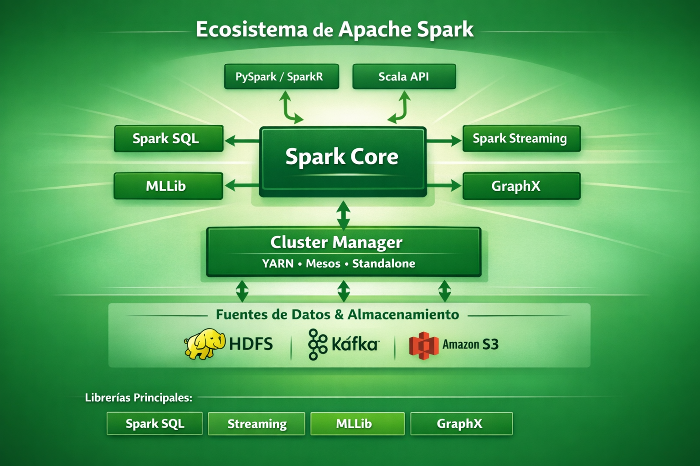

Librerías disponibles en Spark
DESCRIPCIÓN
Apache Spark es un framework unificado para procesamiento distribuido que integra múltiples librerías especializadas dentro de un mismo ecosistema. Estas librerías permiten abordar diferentes tipos de cargas de trabajo, incluyendo procesamiento batch, streaming, machine learning, análisis de grafos y consultas SQL, además de facilitar la integración con múltiples fuentes de datos.

Figura 1: Ecosistema de librerías de Apache Spark
Una de las principales ventajas de Spark es que todas estas librerías comparten el mismo motor de ejecución, el mismo planificador y un modelo común de despliegue sobre distintos cluster managers, permitiendo construir pipelines completos sin cambiar de tecnología.
SPARK CORE
Spark Core es la base del sistema. Spark Core es el motor de ejecución distribuida que proporciona las funcionalidades básicas de procesamiento, gestión de memoria, planificación de tareas y tolerancia a fallos. Es la base sobre la que se construyen el resto de librerías del ecosistema.
Funcionalidades principales- API basada en RDD (Resilient Distributed Datasets).
- Gestión del paralelismo y particiones.
- Planificación de tareas (DAG scheduler y task scheduler).
- Gestión de memoria, caché y persistencia.
- Tolerancia a fallos mediante recomputación basada en linaje (lineage).
- Soporte para ejecución en distintos cluster managers (Standalone, YARN, Kubernetes, entre otros).
SPARK SQL
Spark SQL es el módulo para procesamiento estructurado. Introduce el modelo de DataFrames y Datasets, un motor SQL optimizado (Catalyst) y mejoras de ejecución (Tungsten). Permite ejecutar consultas SQL sobre datos distribuidos y trabajar con múltiples formatos (Parquet, ORC, JSON, etc.).
Capacidades
- Consultas SQL estándar sobre datos estructurados.
- Uso de DataFrames y Datasets como abstracciones principales.
- Integración con Hive (metastore, tablas y formatos).
- Lectura y escritura de múltiples formatos (Parquet, ORC, JSON, CSV, Avro mediante dependencias, etc.).
- Catalyst Optimizer: optimización de planes lógicos.
- Tungsten: mejoras de ejecución y gestión eficiente de memoria.
- Planificación lógica y física: selección de operadores y estrategias de ejecución.
df.createOrReplaceTempView("empleados")
spark.sql("SELECT departamento, COUNT(*) FROM empleados GROUP BY departamento")SPARK STRUCTURED STREAMING
Structured Streaming es el módulo para procesamiento de datos en tiempo real. Utiliza el mismo API estructurado que Spark SQL (DataFrames/Datasets) y se basa en micro-batches para proporcionar garantías de consistencia. Permite procesar flujos de datos desde múltiples fuentes (Kafka, sockets, archivos, etc.) y escribir resultados en múltiples sinks.
Características- API unificada batch/streaming: la misma lógica puede aplicarse a datos históricos y a datos en tiempo real.
- Soporte de fuentes y sinks: Kafka, ficheros, sockets, entre otros (dependiendo de conectores).
- Gestión de estado para operaciones con agregaciones y ventanas.
- Garantías de consistencia (dependen del origen/sink y del modo de escritura).
stream_df = spark.readStream.format("kafka").option("subscribe", "topic").load()
query = (stream_df
.writeStream
.format("console")
.start())MLLIB (MACHINE LEARNING LIBRARY)
MLlib es la librería de aprendizaje automático de Spark. Proporciona algoritmos escalables para clasificación, regresión, clustering y filtrado colaborativo, además de herramientas para preparación de datos, evaluación y pipelines de ML. Se integra de forma natural con DataFrames y el resto del ecosistema.
Capacidades- Clasificación (por ejemplo, regresión logística, árboles, etc.).
- Regresión (lineal, regularizada, etc.).
- Clustering (por ejemplo, K-Means).
- Reducción de dimensionalidad y extracción de características.
- Evaluación y validación cruzada.
- Pipelines de ML (estimators, transformers y evaluadores).
from pyspark.ml.classification import LogisticRegression
lr = LogisticRegression(featuresCol="features", labelCol="label")
model = lr.fit(training_data)GRAPHX
GraphX es la librería para procesamiento de grafos de Spark, disponible principalmente en Scala. Permite representar grafos mediante colecciones distribuidas de vértices y aristas y ejecutar algoritmos de análisis de grafos a escala, como PageRank, Connected Components o Triangle Counting.
Capacidades- Algoritmos clásicos: PageRank, Connected Components, Triangle Counting.
- Análisis de redes sociales y grafos de relaciones.
- Transformaciones sobre grafos basadas en operaciones distribuidas.
val graph = Graph(vertices, edges)
val ranks = graph.pageRank(0.0001).verticesCONCLUSIÓN
El ecosistema de librerías de Spark convierte a la plataforma en una solución integral de procesamiento de datos distribuidos. La combinación de Spark Core, Spark SQL, Structured Streaming, MLlib y GraphX permite abordar arquitecturas completas de datos, desde la ingesta hasta el análisis avanzado, compartiendo infraestructura y modelo de ejecución.
En entornos académicos y profesionales, esta unificación facilita el desarrollo y despliegue de soluciones escalables, reduciendo la complejidad tecnológica y permitiendo reutilización de código entre distintos tipos de cargas (batch y streaming) y fases del ciclo de vida del dato.